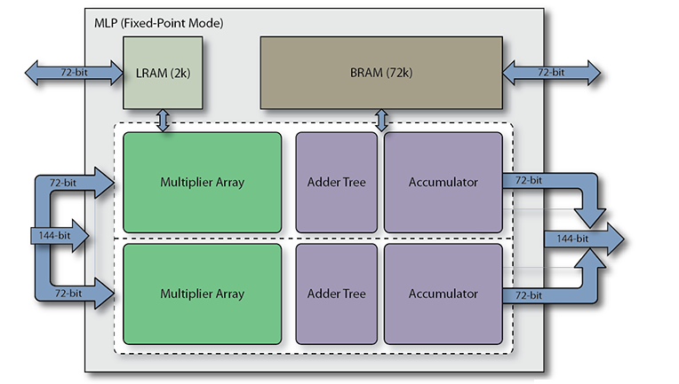
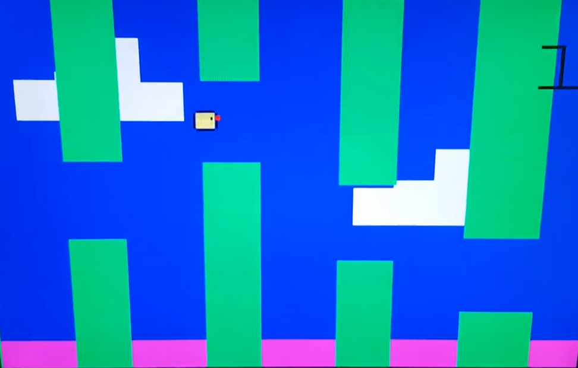
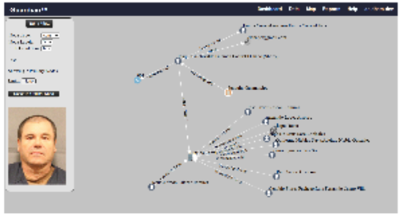
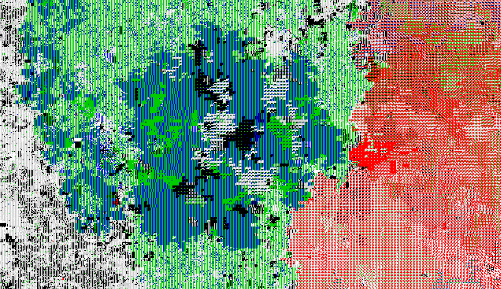
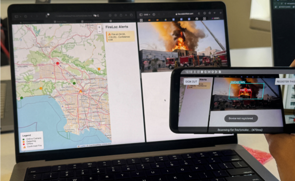
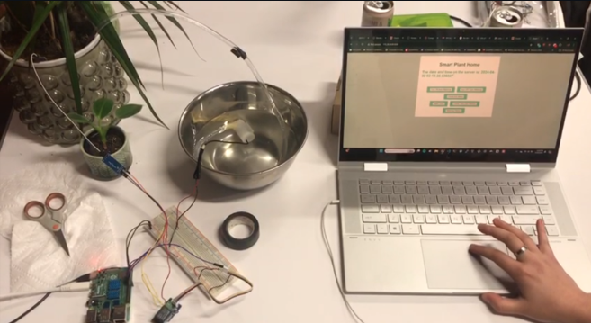

Hello! My name is Maia Piechocki, and I am a current undergraduate at the University of Southern California pursuing a BS in computer science with an emphasis in embedded systems.
My passion lies at the intersection of hardware and software, ranging from development in microelectronics to designing probabilistic models in machine learning.
Technical mastery is born from the friction of experimentation and consistency. This mindset fuels my insatiable curiosity, commitment to hard work, and a willingness to adapt and grow, both personally and professionally.
Ultimately, I seek to accrue knowledge through experience, equipping myself with tools to tackle today's computing challenges and learning from a self-driven curiousity about the intelligent systems that govern society.
coding
embedded
ml
all
← back

Distributed MLP on FPGA & GPU↗
Verilog
CUDA
Python
Distributed neural network accelerator that implements Multilayer Perceptron (MLP) inference across two FPGA boards using Verilog. The design splits computation by offloading matrix-vector multiplication and activation to separate devices via a physical link. A parallel CUDA implementation utilizing shared memory optimizations serves as a high-performance benchmark for comparing FPGA and GPU architectures.

Flappy Bird on FPGA↗
Verilog
FPGA
VGA
Implementation of the Flappy Bird game written in Verilog and synthesized onto an FPGA. Gravity, jump mechanics, pipe generation, collision detection, and score tracking managed by a Finite State Machine operating at the clock cycle level for real-time gameplay.

Guardian v2: AI Entity Link Discovery↗
Python
MySQL
LLM
AI-driven pipeline that automates the discovery and mapping of hidden entity relationships within large datasets. This solution replaces labor-intensive manual link discovery with a scalable, three-layer verification process. It uses SentenceTransformers for semantic embeddings and an air-gapped Gemma 2B LLM for structured, explainable link validation.

Multi-Server Parking System↗
C++
Socket API
Distributed system designed to manage campus parking reservations. Built in C++, this project uses UNIX sockets for all communication between the client, a central routing server, and three distinct backend servers.

Autopoietic Automata↗
Python
PyGame
Genetic Algorithms
Artificial life simulation built in Python that visualizes the emergence of self-replicating code from random noise. It utilizes a custom virtual machine to execute programs written in a minimalist esoteric language, employing genetic algorithms to drive evolution and survival across a 2D grid rendered in PyGame.

FireLoc↗
python
computer vision
kotlin
A real-time wildfire crowdsensing system that integrates monocular depth mapping with Digital Elevation Models (DEM) to localize fires using low-cost smartphones. The system utilizes an ensemble method of Deep Monocular Topography and triangulation algorithms to achieve accurate and rapid localization.

Vibe.ai↗
python
javascript
html
Audio-to-data visualizer that transcribes speech using the OpenAI API and analyzes sentiment with the Google Cloud Language API. A FastAPI backend processes and serves the data, which is then rendered as a live visualization in p5.js.

32-bit Hash Core↗
SystemVerilog
Vitis HLS
Designed a 32-bit hash accelerator in C++ with Vitis HLS, applying pipeline pragmas for single-cycle throughput. Synthesized to Verilog RTL and verified in ModelSim/FPGA.

Smart Plant↗
Python
Flask
RaspberryPi
IoT system built with Python, Flask, and a Raspberry Pi to automate plant watering. The Flask server hosts a web UI for control, while threading manages a background loop.
Contact me directly using this form
or send me an email at:
piechock@usc.edu
(click to copy)